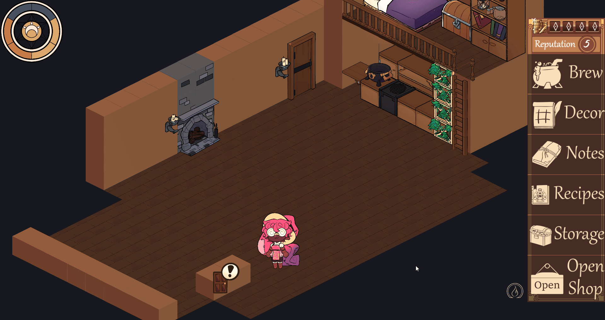

Map Results Progress
Nov 24, 2024Hey! So Ive been putting together the results screen for after clearing up the boss room, art will need to mdo alot of heavy lifting. I wonder if there should be a seperate devlog just for the map generation and I pretty what I have now.
I dont think having shorter devlogs would matter but ill have to decide on it later. I cant draw as much or at all at my job anymore, not in trouble just more workload, so still figuring things out. Dont have much to say, life and junk, still working. But def need to hurry up already (シ_ _)シ
I would save more as gifs but for some reason RN a gif is like 10 times the memory as a vid, but ill cut down on future ones
Special & Destructable Flora
November 11, 2024
Hey again, ive been busy abit putting together the flora stucts, so far I got: Boulders, Logs, Trees and a specialized plant called a Candleflora (i dont have a better name for it yet)
These specific structures apart from the candleflowers will be destructable to the players and enemies, i'll have to really see if the preset maps should be bigger to compensate against enemies and spells.

I think the 1 block structs should not have collision until maybe I can test how combat would fully progress,it would probably be annoying if you had to dodge projectiles and tiny collisions.
Im NGL, it would've been done sooner but the election really worried me. All I can do is continue my normal but hey if you dont hear from me atleast on here or social media, then Im sorry if I cannot finish the game for you guys. Not to jinx myself or anything but im not confident that ill just be fine for another 4 years, especially with police immunity or his radicals getting confident on what they can get away with.
Ive also privated my twitter and moved onto BlueSky, I hope its obvious with how my protagonist looks its dangerous to promote in that cesspool.
I wish there were other places that would be good to post when its not entirely video related. That wouldnt be a problem but I would really need to curate it like the devlogs for appeal yknow? also why I dont really post gameplay on tiktok, I should but it might also be deleted january, idk
Anyway whats next is a results screen, going to and from the cabin, and drawing out the other gimmick rooms, stay posted till then! I might also need to create more race body types but ill have to decide if i want to also overhaul how the current skeleton bodies look. Im trying to save all art stuff for the art overhaul but im starting to think wips arent appealing to look at lol :P
I think it would be like the People -> Tiles -> Structures -> UI -> Cabin. So much for a small game lol
Scroll Map Dungeon Generation
November 1, 2024
Hey guys, made a similar map generation for the continuing foraging
Not to plan too big but I had the idea for 7 room types:
MONSTER / TREASURE / REST / SHOP / AWAKEN / FAUNA / BOSS
The generation will still be relatively the same though, if you remember seeing a yellow room in previous minimap generation those would be replaced with the respective special interest rooms
Rest, Fauna and Shops will be single rooms instead
Heres my future goals for the current map gen:
- Single Interest Rooms
- Add in all room types
- Add flora & random structure generation
- Show Results screen after room
- Method of returning back and forth cabin
Stuff like enemies and spells will have to come abit later after these, but ive been making really good pace so far. Compared to my other features these features already exist commonly so my time coding these in is much faster.
MapGen + MiniMap WIPs
October 27, 2024Long time no see buddy! Heres some of the progress ive been on with the maps
Ive decided to have the dungeon aspect of the game to use preset like maps in the generation to have more control. I'll of course expand and fill them for a better battlemap. So far the map will generate between 6 to 13 rooms at random
For now I need to build up the other part of generation, being the entire dungeon layout. Kinda like how COTL does it, I want to hold off as much I can on making any art and expand on that demand after!
Ive also think it would be a good idea for my dungeons to have every room, aside from select special rooms be open. The whole point into even venturing into these dungeons is to collect materials from the monsters slain for materials, or just collecting from the fauna. That should be enough of an incentive to go there, as your business or potions wouldnt thrive without a steady stream of them.
But ill no doubt be extatic to show off my progress more when thats ready! Stay tuned and sub to the YT to keep up! :D
DEVLOG 4 IS OUT
October 21, 2024Ok the 4th devlog is out and on the frontpage, what now? Aside from me needing to make another announcement, the future plans were laid out in the vid, where i'll put focus on the foraging combat and map building.
Its obvious this project is very art intensive, but now that this devlog is covered I can lean back onto coding while maybe easing up on the art. I probably wont tbh since art is the best thing can do to advertise what im making, but drawing everyday has really decreased the quality. So im going to make an attempt on focusing studies with my art while prototyping with my code with limited sketches!
I have conflicting feelings about my art I wont get in to, so I really want to try to be capable of making better pieces. Even if the immediate next posts I make arent studies trust I dont plan to stay stagnant!
If you havent seen the devlog yet please give it a sniff and subscribe to follow my edited logs! This one was especially a month+ in the making!
Devlog 4 Almost Done!
October 14, 2024Hey! Just making a post updating about the next devlog
Its almost done, all it really needs left is art visuals. I go over most of the posts ive described here but also Im updating the Journal UI because the old one looked so eh
Also gave a new emote to customers too for them to admire special decor the player places
Other than those, after this devlog is when I start focusing on the 3rd pillar in combat, but im definitely B-lining to redeveloping a save mechanic cause MAN do I regret not having that be the first thing I fixed up after the unity import...
Maybe also fix up the website to be more presentable. So lets hope my arting can follow through (•̀ᴗ•́)و ̑̑
Hero Portraits & Plan
September 23, 24Sorry for this one taking awhile, I didnt mean for it to take this long to finish the portraits. But a mix of art block and not feeling as any of it is adiquate enough. But reaction portraits for the current Hero Customers are here!

Like to me these are 3 different but I wont mull about it outside of this, it just hard to stay consistent for 9 portraits AND be saitsfied with it
Now's priority is scripting for the next devlog and I already got a good summary on what to say, it'll be more of a recounting of what ive done cause Ive got to get going and lock out of the monotony of my day job. I might in the future shade and highlight the portraits too so not final product of course! I also need to figure out how to record my voice better, I used audacity but idk if thats really working out in my strongsuit.
Either way ill figure it out in time! It'll probably be shortish like the last one. I have to B line to making the 3rd pillar Foraging so i'll do my best
Hero Spawn Rarity
August 24 - September 2, 2024
After opening the shop, you have a chance to spawn hero’s in your shop that won’t reset till the next time you open back up. For now they pick a random spot within the cabin area to stand.
This week was making UI, heros to spawn on a rarity, filter duplicates so you shouldnt get a hero your already doing an order for, and their skeletons. After this, I just have to make them dialog sprites & preferences
Ive had an inkling to give them like one of those gatcha intros when the doors open and the star rating and BIG fullbody portrait. Nothing too much like an animated intro, its just to get the ground off it.
Plus I still need to make each of the current hero's (3) portraits, (alot of the game progress is needing art argh) Next blog post should be the last one before I start working on the 4th devlog ᕦ(ò_óˇ)ᕤ
Goals Left:
- Hero Preferences (only wanting healing/defense/etc)
- Hero Portraits
- Decor Rep Multiply
---Sept 2nd Edit---
I SEVERLY underestimated how much I would be saitsfied making portraits for these, not to mention my motivation for doing art have crashed for awhile after doing it daily, but I wont whine about it RN
Portraits are still in the works, still 9 needed, maybe I shouldnt hold off making blog posts cause the sole reason of these was to share WIP faster but yea. It might be awhile to make sure they arent like weird looking.
I was also supposed to make a promo animatic for the devblog but its on hold cause I forgot even making and planning 10 seconds of these could take a week, ill just leave it like that to not complain more... ill be back!
Inventory UI Update
August, 18 2024
redid the inventory almost entirely to compensate the new design this weekend & added in Rael + Cherie. I was working on this UI on and off abit during my dayjob, (work wasnt that extensive) and got to work this weekend with coding for it so i can replace the wip stand in it had before.
moreso entered the train of "well if i did this i might aswell add this, so now its fully redeveloped lol. as always it still depends on other factors so ill say its 90% done (•̀ᴗ•́)و ̑̑
Also added 2 new heros to fill in the Hero Star Lists for future testing
2 Star Magical Girl Hero Cherie (Water Hybrid one)
3 Star Ex-Pirate Turned Mercenary Hero Rael (Elf one)

Fun Fact: Rael is my first and current running DnD PC :D!!
making these npc models is alot of fun and i can get them out pretty quick surprisingly, more annoying to put together tho since they all have stuff on them so they dont scale similarly. One day ill get fed up and put them all through a grinder.
but for now screw future me, ima have fun with them. Now back to the rest of that list!
List until next devlog
August 15, 2024
Completed
- customer classes (commoner,noble,etc)
- dialogue system
- (start)website page to track
- create more base designs
Goals
- fixup results tracker
- give heros rarity spawn
- decor rep multiply
Ive been working on this list since July. The results tracker is there but I feel like it needs abit more tweaking before its ok.
I also stated awhile ago (somewhere) that once the 4.3 update changes come to godot ill try to get on track for a art overhaul. Ive kinda already been trying to since ive been making UI recently, Ill let you guys know about its progress after this devlog but yea again ill tackle it periodically so my wrists dont fall off!
These last ones shouldnt be too much trouble tho! Ive already implemented the heros having a rarity spawn, i just have to call them after the shop gets closed. Otherwise ill do my best to not have this devlog take more than a month to post lol!
WEBSITE IS ALIVE
August 15, 2024Hello Visitors!
I made this website to better track the development progress in my game Witch Tuition!
Ive never made a website before so ill still try to update the look of this place while adding new posts and progresses. Twitter and youtube only felt like the places I COULD post updates on, but I share more updates casually that would take forever to keep up with devlogs for. The hosting site might change too if I need to like add comments or more storage but ill be figuring it out!
I hope you can keep this site in mind and take a peak when updates come! ill try to also get past updates when im free to for archiving! Until then, I hope you guys stick around! :D
First phase of Customers & Hero Models
July 14, 2024
Heres the models so far for the npc customers
The classes ranges from Commoners | Travelers | Adventurers | Nobles
There will also be Heros: who will request commissions of multiple potions as well as have ratity when spawned in. I sorta also wonder if theres gonna be too many skeleton bases in the final version.